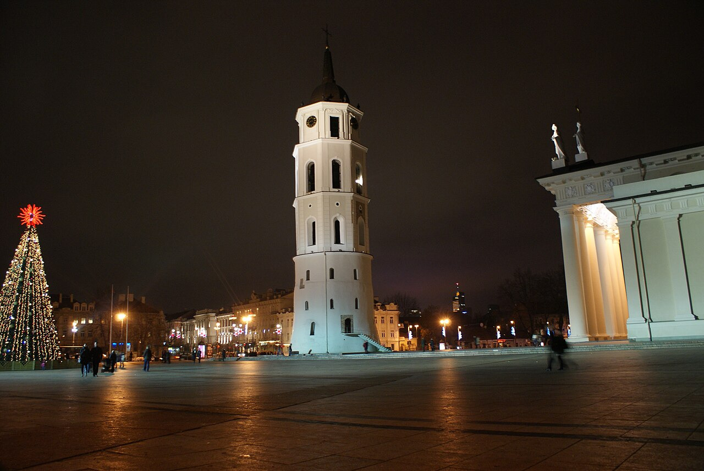
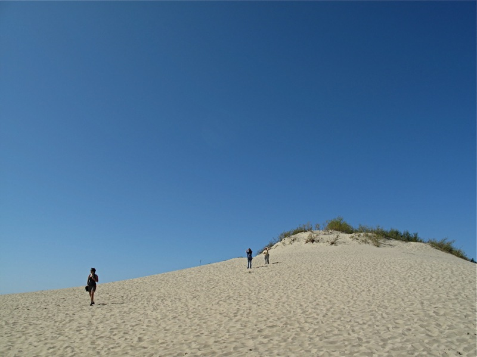
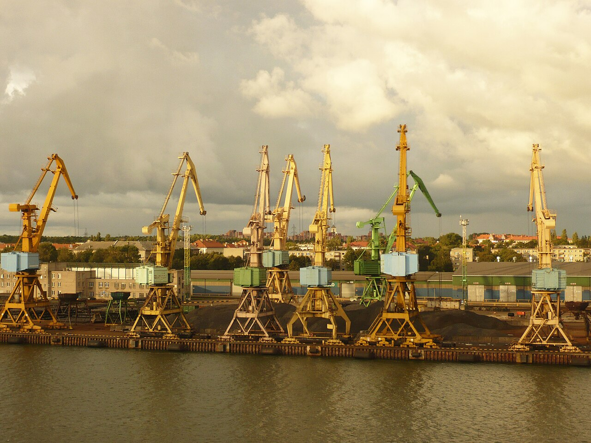
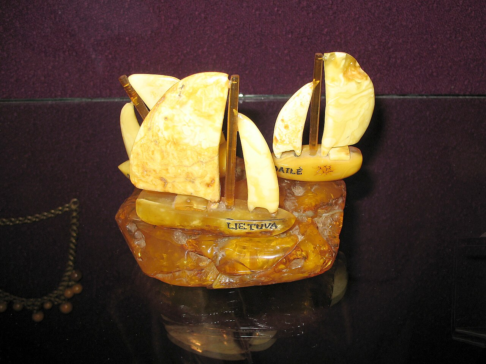
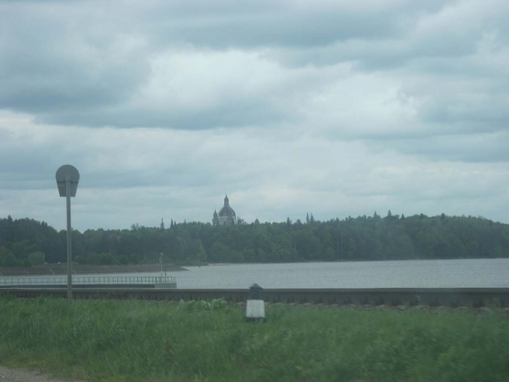
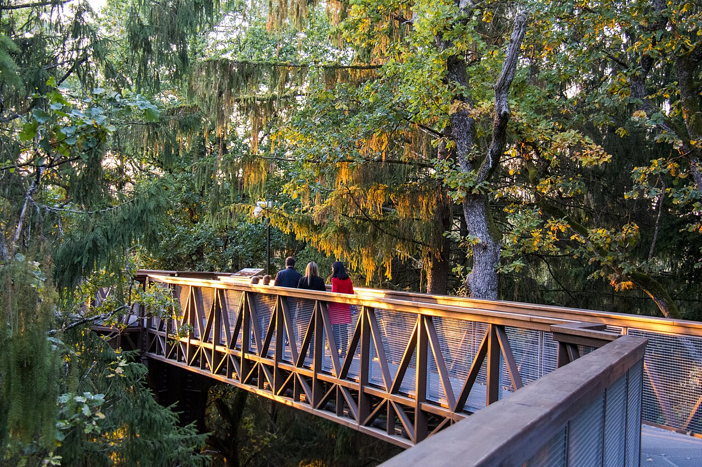
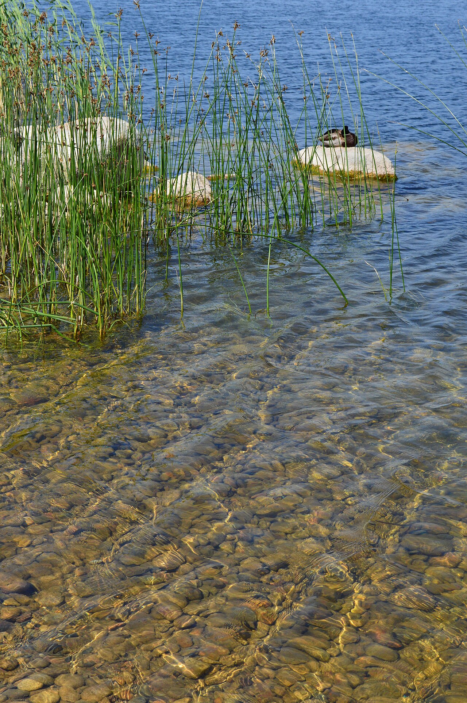
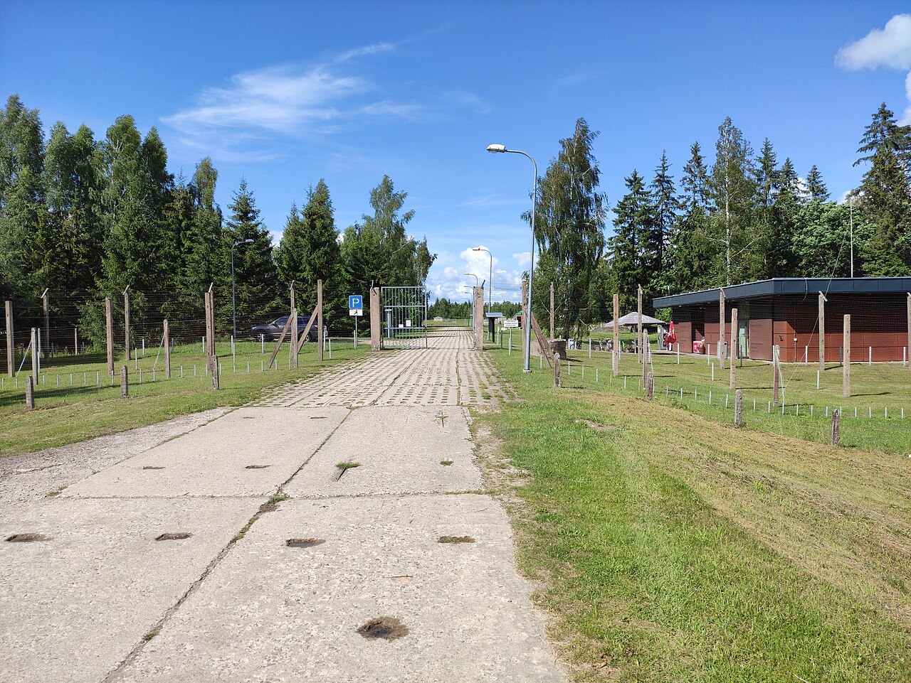
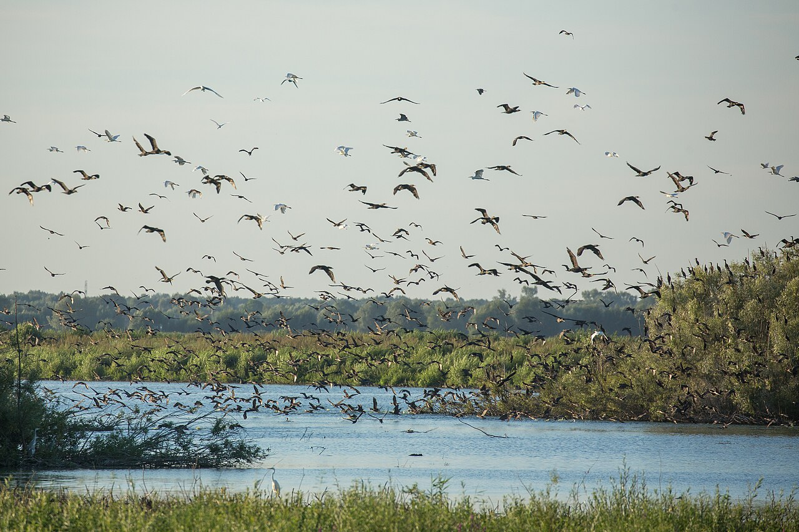

관광 명소 15곳
사진은 Wikimedia Commons에 공개된 실제 촬영본이며, 저작자와 라이선스를 각 사진 아래에 적었습니다. 촬영한 날씨·시기·구도에 따라 실제 모습은 다를 수 있습니다.
-

사진: BigHead · CC BY-SA 4.0 · Wikimedia Commons 빌뉴스 구시가지Vilniaus senamiestis
바로크 교회와 골목, 붉은 지붕의 도시 풍경.
자세히 보기
리투아니아 대공국 중심지였던 빌뉴스는 가톨릭·정교회·유대교 등 다양한 종교와 교역문화가 중첩된 공간이다. 1994년 유네스코 세계유산 등재.
- 볼거리
- 빌뉴스 대학교, 성 안나 교회, 구시가지 광장·언덕을 묶어 양식별 건축을 비교한다.
- 방문 유의사항
- 돌길을 걷기 편한 신발을 권장하며 교회 미사 중에는 출입 제한이 있을 수 있다.
출처: lithuania.travel
-

사진: Mahufi · CC BY-SA 3.0 · Wikimedia Commons 빌뉴스 대성당과 게디미나스 탑Vilniaus arkikatedra / Gedimino pilies bokštas
하얀 고전주의 대성당과 언덕 위 붉은 탑의 대조.
자세히 보기
역사적 중심과 도시 건설 전설을 하나로 보여주는 도시 상징 두 곳이다. 대성당 광장의 조각과 종탑, 언덕 성탑의 전망을 별도 섹션으로 설명하면 좋다.
- 볼거리
- 대성당 정면·광장, 게디미나스 탑, 강과 도시 지붕 풍경을 비교한다.
- 방문 유의사항
- 성탑 언덕 접근 방식·전망시설 운영상태 확인.
출처: lithuania.travel
-

사진: Dmitry A, Mottl · CC BY-SA 3.0 · Wikimedia Commons 트라카이 호수성Trakų salos pilis
호수 한가운데 붉은 벽돌 성이 떠 있는 듯한 풍경.
자세히 보기
리투아니아 대공국 시대의 전략적 요새로, 갈베 호수 섬에 위치한다. 카라이멘 공동체의 키비나이 음식과도 연계할 수 있다.
- 볼거리
- 물 위의 목교, 복원된 탑과 성벽, 호수에서 바라보는 고딕 요새를 함께 설명한다.
- 방문 유의사항
- 빌뉴스 근교 당일치기 가능하지만 성 박물관 운영일은 변동된다.
출처: lithuania.travel
-
사진: Quintin Soloviev · CC BY 4.0 · Wikimedia Commons 카우나스 모더니즘 건축Modernistinis Kaunas
1920~30년대 근대건축이 남아 있는 도시.
자세히 보기
전간기 임시수도였던 카우나스의 급속한 도시계획과 건축문화가 2023년 세계유산으로 등재되었다.
- 볼거리
- 중앙우체국, 그리스도 부활 대성당, 도심 관공서·주거건물을 보며 당시 도시개발을 설명한다.
출처: lithuania.travel
-

사진: Charlie Phillips from London, UK · CC BY 2.0 · Wikimedia Commons 쿠로니아 사주·니다 사구Kuršių nerija / Nidos kopos
발트해와 석호 사이에 이어지는 거대한 모래사구.
자세히 보기
리투아니아와 러시아 칼리닌그라드 지역에 걸쳐 있는 사주로, 이동성 모래사구와 인간의 사구안정화 작업이 공존한다. 2000년 세계유산 등재.
- 방문 유의사항
- 보호구역에서는 지정된 데크 외 출입을 피하고 사구 훼손 금지.
출처: lithuania.travel
-

사진: Alet123 · CC BY-SA 4.0 · Wikimedia Commons 십자가 언덕Kryžių kalnas
수많은 십자가가 언덕 전체를 뒤덮은 독특한 성지.
자세히 보기
신앙뿐 아니라 공동체와 민족 정체성의 상징으로 발전한 곳. 소련시기 철거와 재건의 역사를 짧은 연표로 다루면 이해가 쉬워진다.
- 볼거리
- 십자가의 다양한 재질·크기와 언덕의 밀집 경관, 방문객의 봉헌 문화.
- 방문 유의사항
- 종교예절을 지키고 다른 이의 봉헌물을 함부로 만지지 않는다.
출처: lithuania.travel
-

사진: Hartmut Schmidt Heidelberg · CC BY-SA 4.0 · Wikimedia Commons 클라이페다 구시가지·항구Klaipėdos senamiestis / uostas
발트해로 이어지는 리투아니아의 주요 항구도시.
자세히 보기
구시가지의 독일계 건축 흔적과 현대 물류항만의 대비로 국가 해양경제를 소개하기 좋다.
- 볼거리
- 극장광장, 회전다리, 선박·크레인·수변 산책길을 해양문화 동선으로 묶는다.
- 방문 유의사항
- 항만 보안구역은 관광객 출입이 제한된다.
출처: lithuania.travel
-

사진: Liilia Moroz · CC0 · Wikimedia Commons 팔랑가 호박박물관·비루테 공원Palangos gintaro muziejus / Birutės parkas
발트해 호박을 이해하는 박물관과 조경공원.
자세히 보기
호박이 장식품을 넘어 해안의 자연사와 교역의 자원이라는 점을 보여준다. 공원과 궁전건축, 바다 산책을 묶을 수 있다.
- 볼거리
- 호박 내포물 표본·왕실별장형 박물관 외관·해변을 각각 설명한다.
출처: lithuania.travel
-

사진: Bearas · CC BY-SA 3.0 · Wikimedia Commons 파자이슬리스 수도원Pažaislio vienuolynas
분홍빛 대리석과 프레스코가 유명한 바로크 수도원.
자세히 보기
카우나스 석호 인근 종교문화시설로, 현대 도시와 17세기 바로크 예술을 대비할 수 있다.
- 볼거리
- 팔각형 교회 공간, 돔 프레스코, 정원·수도원 벽면 장식을 소개한다.
출처: lithuania.travel
-

사진: Rudaminas Simonas · CC BY-SA 4.0 · Wikimedia Commons 아닉슈차이 숲 캐노피 산책로Anykščių šilelio medžių lajų takas
나무 꼭대기 높이에서 숲을 따라 걷는 전망 데크.
자세히 보기
문학과 숲 생태환경을 함께 체험하는 현대 방문 시설. 사유지 전시와 국가 유산을 혼동하지 않도록 관광시설로 소개한다.
- 볼거리
- 수관 높이의 전망로와 끝의 전망탑, 침엽수·활엽수 숲의 계절 변화를 설명한다.
- 방문 유의사항
- 강풍·적설 시 통제 여부 확인.
출처: lithuania.travel
-

사진: Scotch Mist · CC BY-SA 4.0 · Wikimedia Commons 아욱슈타이티야 국립공원Aukštaitijos nacionalinis parkas
호수와 숲 사이에 전통 목조마을이 흩어져 있는 국립공원.
자세히 보기
북동부의 빙하 지형 호수군과 농촌 생활사를 보여준다.
- 볼거리
- 호수 전망, 고풍스러운 목조 마을, 수상 활동의 풍경을 조합한다.
- 방문 유의사항
- 야외활동과 수상레저는 안전규칙·계절별 서비스 확인.
출처: lithuania.travel
-

사진: Fry72, Karel Frydrýšek · CC BY-SA 4.0 · Wikimedia Commons 플록슈티네 냉전 박물관Šaltojo karo muziejus / Plokštinė
옛 지하 미사일 기지를 박물관으로 전환한 시설.
자세히 보기
냉전 시기 군사시설의 보존과 재해석이라는 주제를 다루기 좋다. 관련 전시를 통해 리투아니아 근현대사를 학습할 수 있다.
- 볼거리
- 지하 발사시설 구조, 표지판, 전시를 국가 안보·냉전사와 연결한다.
- 방문 유의사항
- 기밀 자료로 오인하지 말고 공개 전시와 박물관 설명 기준으로 작성한다.
출처: lithuania.travel
-

사진: Baltictrails · CC BY-SA 4.0 · Wikimedia Commons 네무나스강 삼각주Nemuno delta
강 하구의 갈대습지와 철새 경로가 발달한 자연지대.
자세히 보기
발트해 연안 생태와 어촌·어업 전통을 설명할 수 있다.
- 볼거리
- 조류 관찰 지점, 습지 목교, 하구 어촌 풍경 및 계절별 수위 변화를 소개한다.
- 방문 유의사항
- 철새 보호구역 출입제한·번식기 통제를 확인한다.
출처: lithuania.travel
-

사진: Jodkovska · CC BY-SA 4.0 · Wikimedia Commons 우주피스 예술지구Užupio respublika
예술가들이 상징적인 자체 헌법을 내세운 도심 문화지구.
자세히 보기
법적으로 독립국인 지역이 아니라 문화적·상징적 프로젝트라는 점을 구분한다. 작은 거리와 벽화, 현대 예술 공간이 구시가지와 연결된다.
- 볼거리
- 골목의 예술작품, 천사상, 다언어로 쓰인 상징적 헌법 표지판을 비교한다.
출처: lithuania.travel
여행 전에 확인하세요
운영시간·입장료·예약·개방 여부는 계절과 상황에 따라 바뀝니다. 방문 전에 각 명소의 공식 안내에서 다시 확인하세요. 카드의 "자세히 보기"에 참고한 출처를 적었습니다.
쇼핑·기념품
14개 추천 상품사진 7개 확보
리투아니아는 호박과 리넨, 그리고 모양이 독특한 전통 과자가 강합니다. 3월 초 빌뉴스 카지우카스 장터에 맞춰 가면 베르바·도자기 같은 수공예품을 한자리에서 볼 수 있습니다.
대표 TOP 3
카테고리별 전체 상품
카드를 누르면 자세한 설명·구매처·반입 유의사항·사진 출처를 볼 수 있습니다. 가격은 검증된 자료가 없어 싣지 않았고, 구매처는 2026.11.23 기준 정리라 바뀔 수 있습니다. 반입 규정은 관세청·농림축산검역본부 안내를 요약한 것으로 최종 판단은 입국 시 세관에서 합니다.